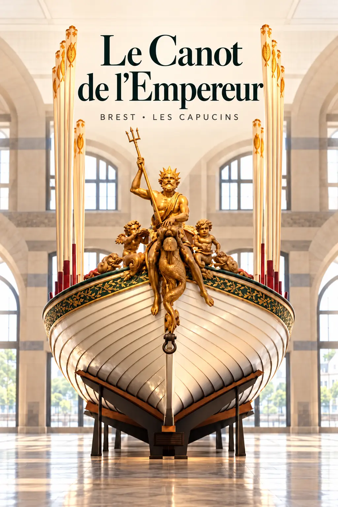
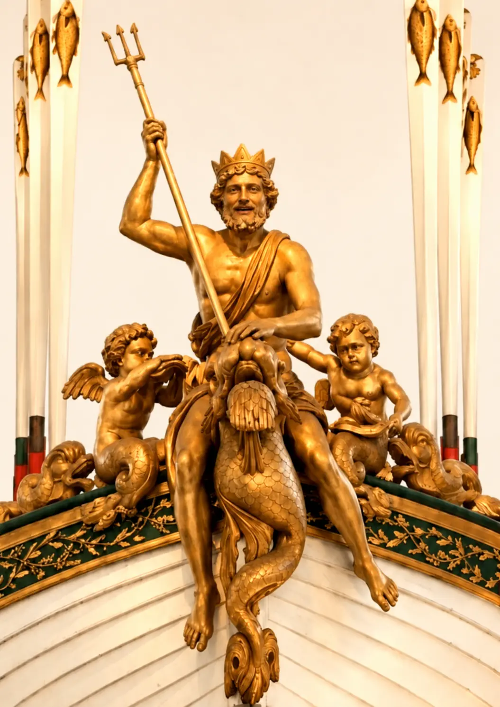
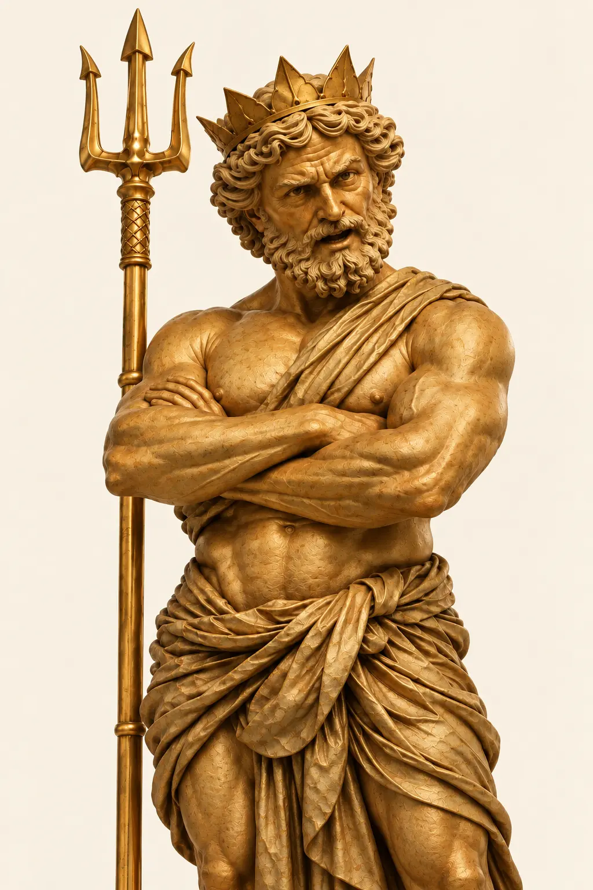
Je ressemble à un chandelier de Versailles ! C’est Napoléon qui aimait les dorures…
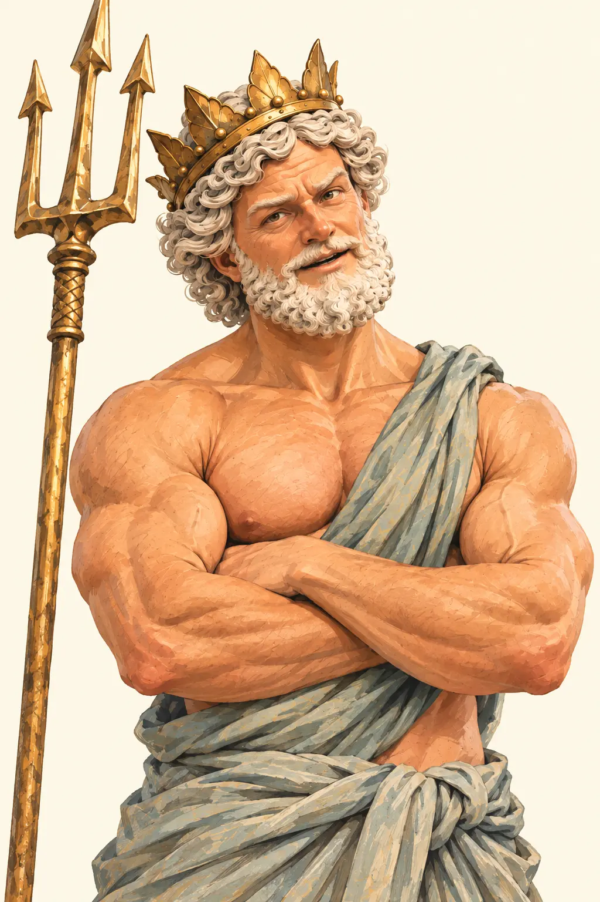
Bon… Maintenant que tu as fini de m’admirer, on pourrait peut-être s’intéresser à ce magnifique canot ?
Allez, ouvre l’œil, le bulot ! Je vais te faire découvrir quelques-uns de ses secrets…
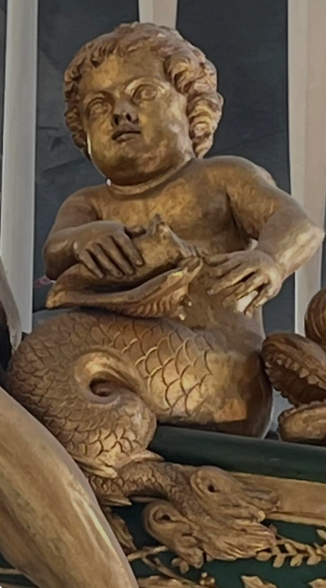
Ah ! Mes petits joufflus à queue de poisson !
Ce sont des putti, le bulot !
De petits personnages inspirés de l’art antique, souvent représentés avec des ailes.
Et pourquoi une queue de poisson ? Parce qu’ici, on est dans MON royaume ! Les artistes en ont fait des créatures marines, mi-enfants, mi-poissons.
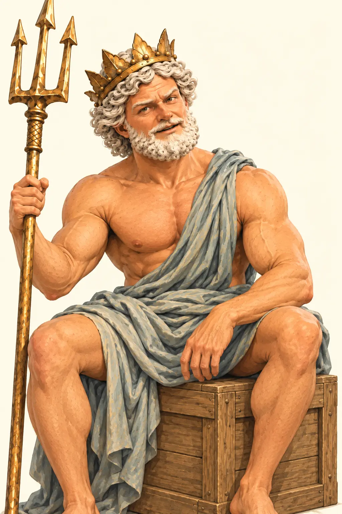
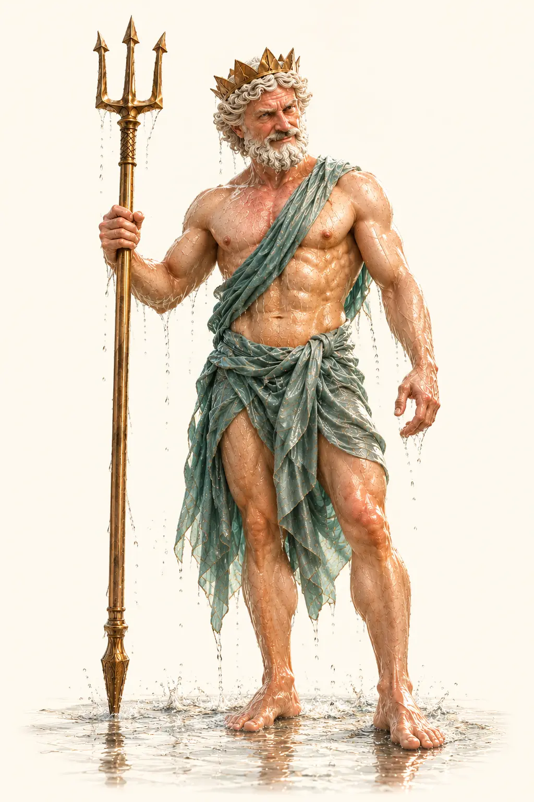
Vérifie si les deux chipies sont toujours là… Minerve et Fama !
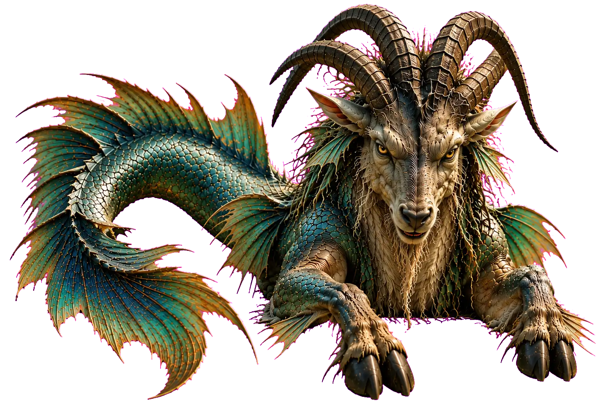
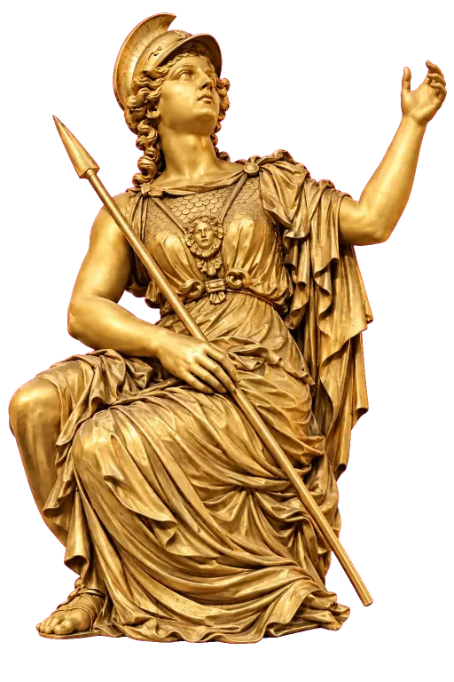
Figure-toi qu'il y a bien longtemps, nous nous sommes disputé la protection de la cité d'Athènes !
Pour nous départager, chacun devait offrir un présent aux habitants.
Minerve, avec ses grands airs, leur a offert un olivier…
Moi, j'ai frappé le sol de mon puissant trident et fait jaillir une source d'eau...
Les habitants devaient choisir le présent le plus utile.
Alors, le bulot, à toi de voter !
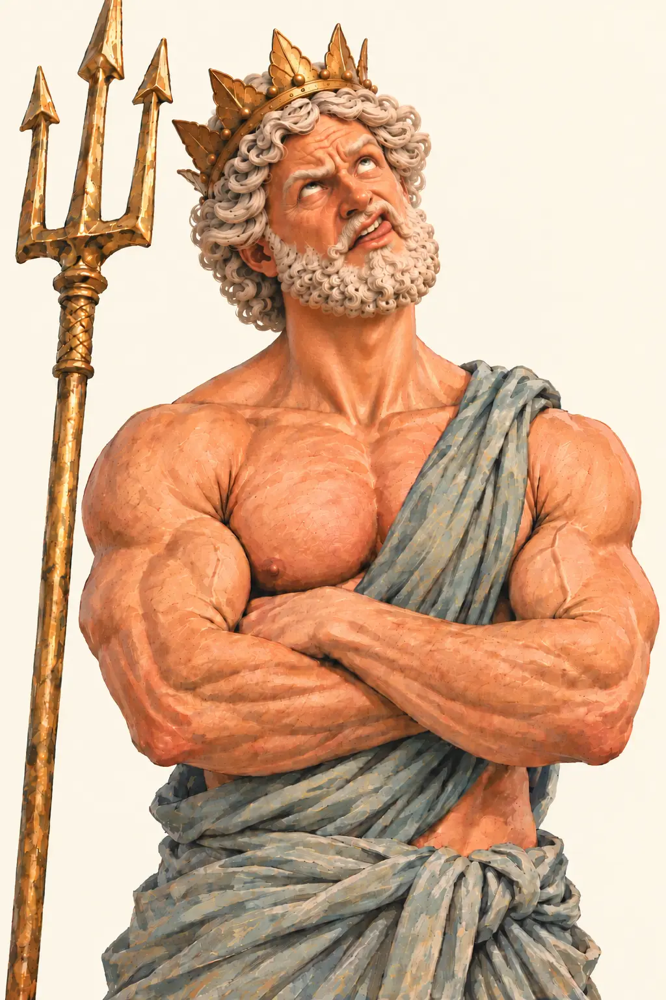
Bon… Il y a juste un tout petit détail que j’ai oublié de te préciser… Mon eau était salée.
Quoi ?! On ne va pas chipoter pour une pincée de sel !
Effectivement, les habitants ont choisi l’olivier…
Bon… Il y a juste un tout petit détail que j’ai oublié de te préciser… Mon eau était salée.
Quoi ?! On ne va pas chipoter pour une pincée de sel !
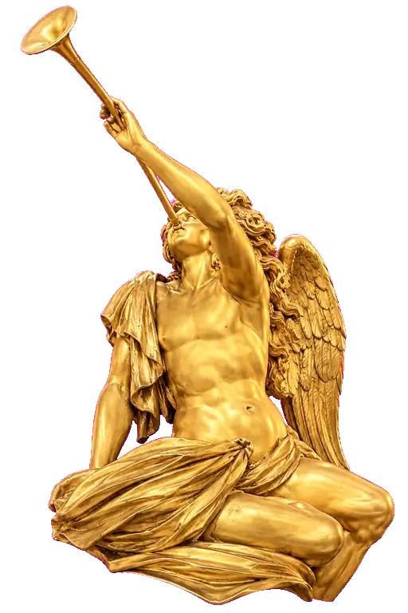
Avec sa trompette, elle est censée faire connaître les exploits des grands personnages.
Moi, par exemple, je règne sur tous les océans ! Pas besoin d’en faire des tonnes !
Napoléon, lui… Des aigles, des couronnes, des N à tous les coins du canot !
Et après, c’est MOI qu’on accuse d’avoir la grosse tête !
Allez, le bulot ! Ouvre l’œil, on va voir si tu reconnais les symboles de l’Empire !
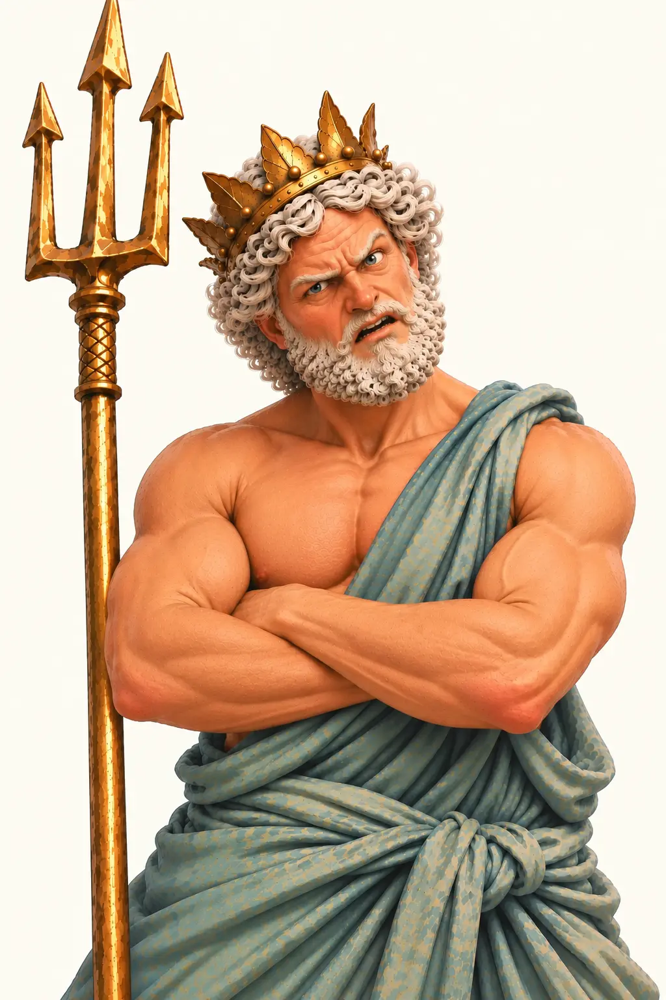
MAIS C’EST QUOI CE DÉLIRE ?!
Un temple à la gloire de Napoléon ?! Ou un étendoir à linge impérial ?!
Il y a de la verdure partout !!!
Manque plus que des poireaux et on a un potager militaire!!!
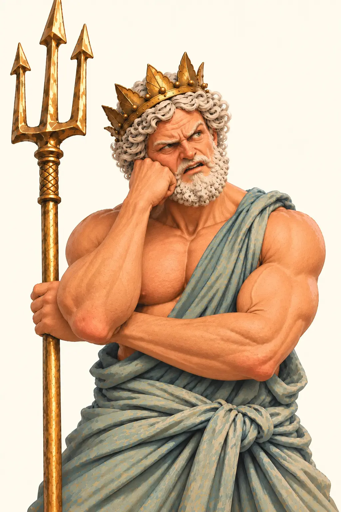
ON SE CROIRAIT DEVANT L’ÉTAL D’UN POISSONNIER !!!
AH, MAIS C’EST ENCORE PLUS RIDICULE QUE ÇA !
Quand les matelots ramaient, les poissons semblaient sortir de l'eau !!!
MAGNIFIQUE !!! Des poiscailles qui font de cabrioles pour saluer l'Empereur !
Manque plus qu'un marchand de crêpe et on est sur un marché impérial Flottant!
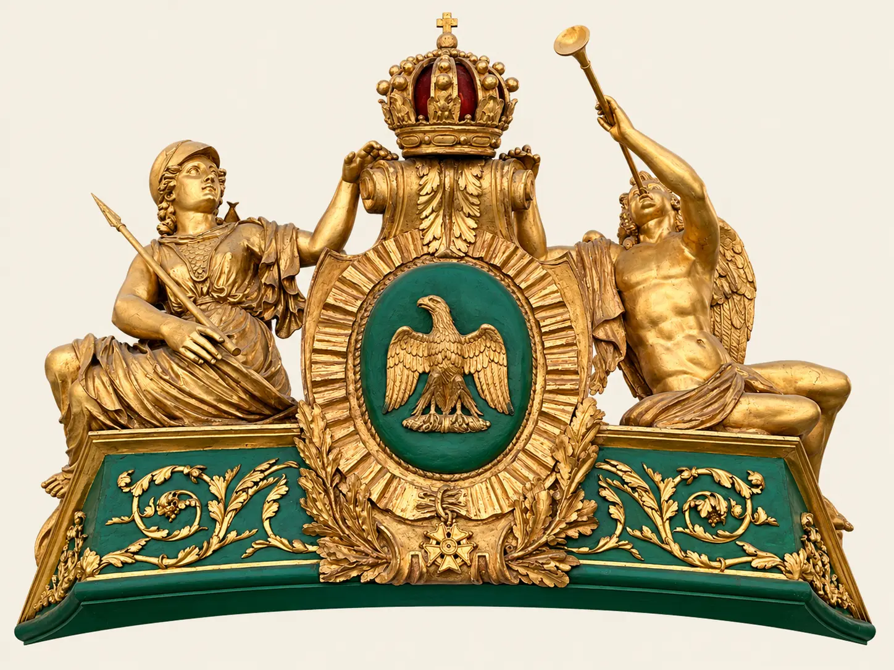
Au centre, un aigle aux ailes déployées se détache sur un médaillon vert. Emblème de Napoléon, inspiré de l’Empire romain, il symbolise la puissance, la souveraineté et la victoire militaire.
Au-dessus, une imposante couronne impériale, ornée de rouge et d’or, rappelle l’autorité de l’Empereur et son accession au trône en 1804.
Sous l’aigle, une étoile à cinq branches évoque la Légion d’honneur, instituée par Napoléon en 1802.

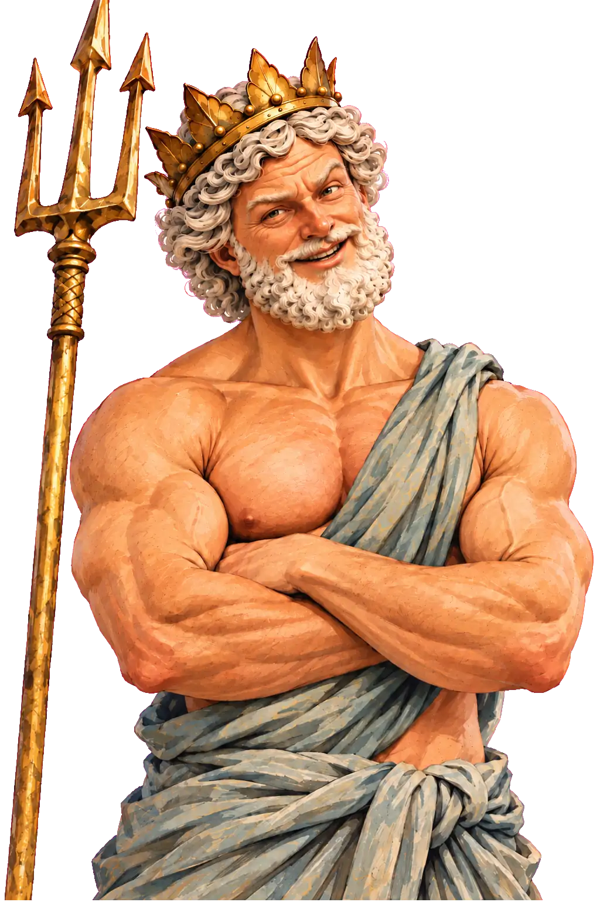
Les putti portent un médaillon aux initiales NL, pour Louis-Napoléon. Ils s’en sortent plutôt bien… Ils auraient pu finir avec un N tatoué sur la fesse de l’un et un L sur celle de l’autre !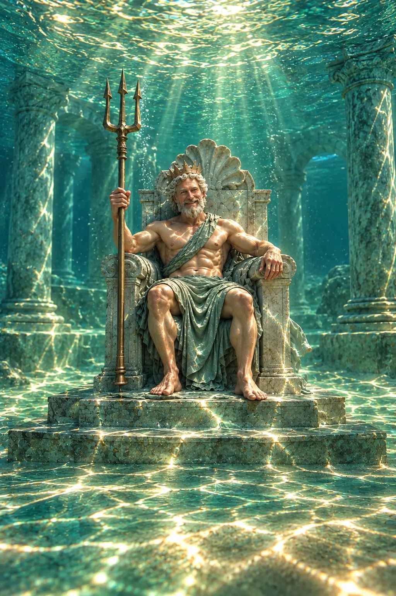
Brest-off
« Je suis Neptune, dieu des mers… et ces cons de sculpteurs m’ont inscrit à l’aquaponey. »
« Napoléon et sa couronne… Le mec s’est carrément couronné lui-même. À ce niveau-là, c’est plus de l’ambition, c’est se mettre cinq étoiles sur Google avant même d’avoir ouvert. »
« Voilà l’aigle impérial. Fier, majestueux, redoutable… Un goéland avec un très bon service de communication, quoi. »
« Tu vas finir en mayonnaise, le bulot ! »
« Kenavo ! Ça veut dire “Au revoir” en breton. D’ailleurs, c’est le premier mot que le soleil a appris en arrivant à Brest… et visiblement, le seul qu’il a retenu! »